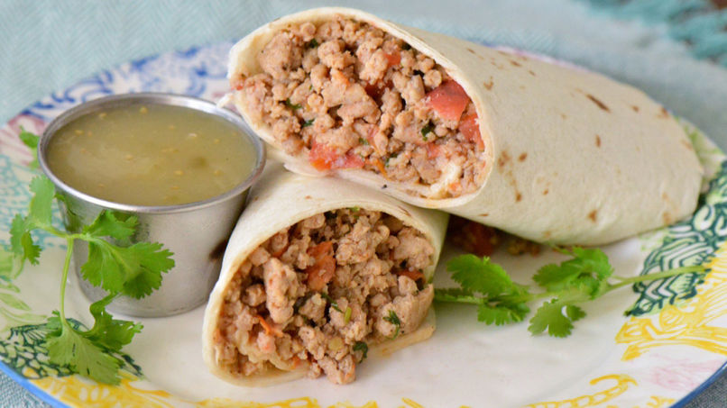

Dairy-free Ground Chicken Burrito recipe

This savory and juicy recipe is fantastic for summer days and when you don't want to eat with manners. It uses ground chicken instead of traditional beef, and has the option for dairy-free cheese to be added. Great for those who need to avoid mammal products.
Ingredients:
- 1 pound ground chicken breast
- 1/2 cup steamed long-grain rice
- 4-6 burrito wraps
- 1 medium-sized diced yellow onion
- 1/2 cup diced green pepper
- 1/2 cup diced celery
- 1/2 clove garlic
- 1/2 can re-fried pinto/black beans
- 1 Tablespoon chili powder
- 1 Tablespoon paprika
- 1/2 Tablespoon cumin
- 1/2 Tablespoon table salt
- 1/4 Tablespoon ground cayenne
- 1 Tablespoon olive oil
- 1 cup cold water
- Salsa/hot sause to preferred taste
- Shredded Daya non-dairy nacho cheese (optional)
Steps:
- Steam rice during or prior to cooking (see recipes on how to cook rice separately).
- Mix chili powder, paprika, cumin, cayenne, and salt into a small bowl.
- In a medium or large surface prying pan, cook the ground chicken on medium-high until golden brown. Remove the chicken from the pan and cover.
- Add oil to pan and saute pepper, celery, onion, and garlic on medium heat.
- Add chicken back to pan, add water and seasonings. Mix and cook at high until water has reduced. Stir regularily.
- While mixture is reducing, heat re-fried beans on the stove or in the microwave until warm but not hot. Prep wraps for creation.
- Use beans as a base on the wrap down the center. Add rice and chicken mixture. Add salsa/hot sauce for taste. Additionally, non-dairy cheese substitue to be added now if desired.
- Wrap burritos by tucking in the sides first, tuck the lower portion of the wrap over the contents and onto the upper side of the wrap, Then pull the upper portion back down over the lower portion, and your wrap is complete!